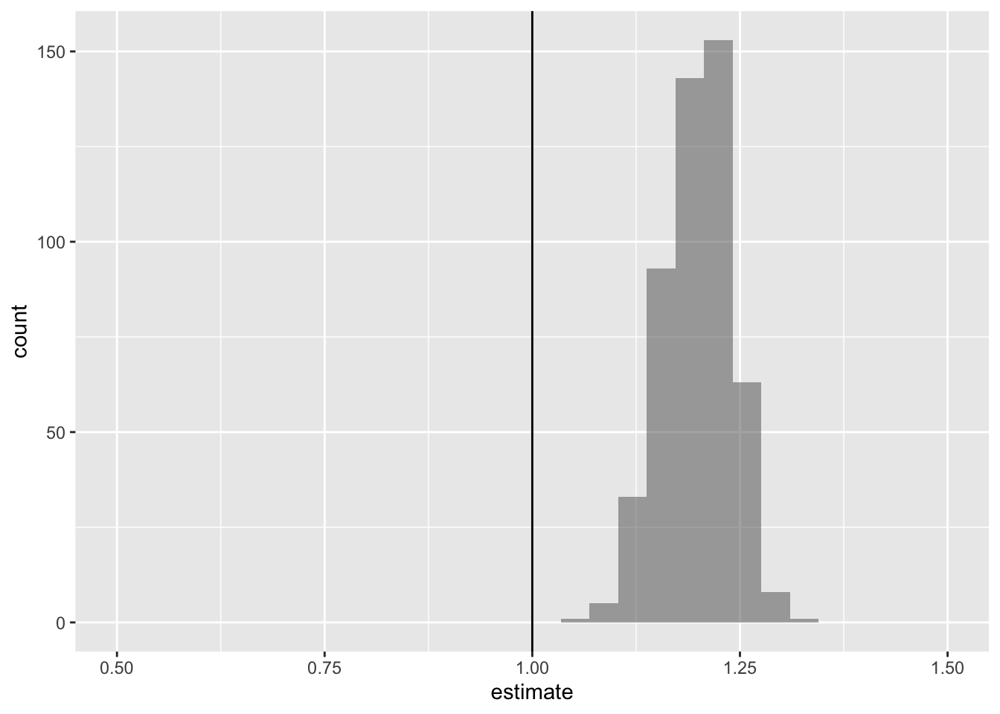
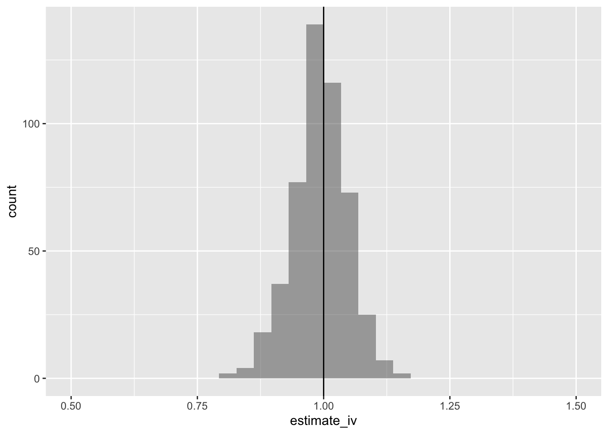

library(mosaic)
library(stargazer)
library(AER)
library(broom)
library(wooldridge)
set.seed(2000)9 操作変数法
9.1 操作変数
data("mroz", package = "wooldridge")
df <- subset(mroz, inlf == 1)これまで回帰モデルで一致推定量を得るためには次の仮定が必要であった.
- 母集団が線形モデル
- 標本が無作為抽出
- 誤差項が平均ゼロで説明変数と無相関
- 説明変数に多重共線性が存在しない
3つ目の説明変数が必ずしも成立しない場合の推定方法を紹介する.
R においては次のコマンドを実行すればよい. ここで被説明変数は log(wage), 内生変数は educ, 操作変数は fatheduc である.
fm <- ivreg(log(wage) ~ educ | fatheduc, data = df)
coef(fm)
#> (Intercept) educ
#> 0.44110339 0.05917348傾きの推定値は以下でも実行可能である.
with(df, cov(log(wage), fatheduc) / cov(educ, fatheduc))
#> [1] 0.059173489.2 シミュレーション
つぎのシミュレーションを考える.
simdata1 <- function(N = 100) {
z <- rnorm(N, mean = 10, sd = 2)
u <- rnorm(N)
x <- z + u
y <- 1 + x + u
data.frame(x, y, z)
}siml_iv <- do(500) *
{
df_sim <- simdata1()
df_ols <- lm(y ~ x, data = df_sim) |>
tidy() |>
filter(term == "x") |>
select(estimate, std.error) |>
mutate(tval = (estimate - 1) / std.error)
df_iv <- ivreg(y ~ x | z, data = df_sim) |>
tidy() |>
filter(term == "x") |>
select(estimate, std.error) |>
rename(estimate_iv = estimate, std.error_iv = std.error) |>
mutate(tval_iv = (estimate_iv - 1) / std.error_iv)
bind_cols(df_ols, df_iv)
}siml_iv |>
dplyr::select(estimate, estimate_iv) |>
tidyr::gather(variable, value) |>
favstats(~ value | variable, data = _)最小二乗法による推定値のヒストグラムは以下である.
gf_histogram(~estimate, data = siml_iv) |>
gf_lims(x = c(0.5, 1.5)) |>
gf_vline(xintercept = 1)
操作変数法による推定値のヒストグラムは以下である.
gf_histogram(~estimate_iv, data = siml_iv) |>
gf_lims(x = c(0.5, 1.5)) |>
gf_vline(xintercept = 1)
9.3 2段階最小二乗法
R においては次のコマンドを実行すればよい. ここで被説明変数は log(wage), 内生変数は educ, 外生変数は exper, I(exper^2), 操作変数は motheduc, fatheduc である.
fm <- ivreg(
log(wage) ~ educ +
exper +
I(exper^2) |
exper + I(exper^2) + motheduc + fatheduc,
data = df
)
summary(fm)
#>
#> Call:
#> ivreg(formula = log(wage) ~ educ + exper + I(exper^2) | exper +
#> I(exper^2) + motheduc + fatheduc, data = df)
#>
#> Residuals:
#> Min 1Q Median 3Q Max
#> -3.0986 -0.3196 0.0551 0.3689 2.3493
#>
#> Coefficients:
#> Estimate Std. Error t value Pr(>|t|)
#> (Intercept) 0.0481003 0.4003281 0.120 0.90442
#> educ 0.0613966 0.0314367 1.953 0.05147 .
#> exper 0.0441704 0.0134325 3.288 0.00109 **
#> I(exper^2) -0.0008990 0.0004017 -2.238 0.02574 *
#> ---
#> Signif. codes: 0 '***' 0.001 '**' 0.01 '*' 0.05 '.' 0.1 ' ' 1
#>
#> Residual standard error: 0.6747 on 424 degrees of freedom
#> Multiple R-Squared: 0.1357, Adjusted R-squared: 0.1296
#> Wald test: 8.141 on 3 and 424 DF, p-value: 2.787e-05実際の二段階最小二乗法でも確認できる.
ols1 <- lm(educ ~ exper + I(exper^2) + motheduc + fatheduc, data = df)
ols2 <- lm(log(wage) ~ fitted(ols1) + exper + I(exper^2), data = df)
summary(ols2)
#>
#> Call:
#> lm(formula = log(wage) ~ fitted(ols1) + exper + I(exper^2), data = df)
#>
#> Residuals:
#> Min 1Q Median 3Q Max
#> -3.1631 -0.3539 0.0326 0.3818 2.3727
#>
#> Coefficients:
#> Estimate Std. Error t value Pr(>|t|)
#> (Intercept) 0.0481003 0.4197565 0.115 0.90882
#> fitted(ols1) 0.0613966 0.0329624 1.863 0.06321 .
#> exper 0.0441704 0.0140844 3.136 0.00183 **
#> I(exper^2) -0.0008990 0.0004212 -2.134 0.03338 *
#> ---
#> Signif. codes: 0 '***' 0.001 '**' 0.01 '*' 0.05 '.' 0.1 ' ' 1
#>
#> Residual standard error: 0.7075 on 424 degrees of freedom
#> Multiple R-squared: 0.04978, Adjusted R-squared: 0.04306
#> F-statistic: 7.405 on 3 and 424 DF, p-value: 7.615e-059.3.1 複数制約の検定
fm0 <- ivreg(log(wage) ~ educ | motheduc + fatheduc, data = df)
waldtest(fm0, fm)もしくは
linearHypothesis(fm, c("exper", "I(exper^2)"))LM検定は以下のように実施すればよい.
lmt <- lm(resid(fm0) ~ educ + exper + I(exper^2), data = df) |>
rsquared() *
nrow(df)
lmt
#> [1] 33.97987
1 - pchisq(lmt, df = 3)
#> [1] 2.000665e-079.4 特定化検定
summary(fm, diagnostics = TRUE)
#>
#> Call:
#> ivreg(formula = log(wage) ~ educ + exper + I(exper^2) | exper +
#> I(exper^2) + motheduc + fatheduc, data = df)
#>
#> Residuals:
#> Min 1Q Median 3Q Max
#> -3.0986 -0.3196 0.0551 0.3689 2.3493
#>
#> Coefficients:
#> Estimate Std. Error t value Pr(>|t|)
#> (Intercept) 0.0481003 0.4003281 0.120 0.90442
#> educ 0.0613966 0.0314367 1.953 0.05147 .
#> exper 0.0441704 0.0134325 3.288 0.00109 **
#> I(exper^2) -0.0008990 0.0004017 -2.238 0.02574 *
#>
#> Diagnostic tests:
#> df1 df2 statistic p-value
#> Weak instruments 2 423 55.400 <2e-16 ***
#> Wu-Hausman 1 423 2.793 0.0954 .
#> Sargan 1 NA 0.378 0.5386
#> ---
#> Signif. codes: 0 '***' 0.001 '**' 0.01 '*' 0.05 '.' 0.1 ' ' 1
#>
#> Residual standard error: 0.6747 on 424 degrees of freedom
#> Multiple R-Squared: 0.1357, Adjusted R-squared: 0.1296
#> Wald test: 8.141 on 3 and 424 DF, p-value: 2.787e-059.4.1 Weak instruments
ols0 <- lm(educ ~ exper + I(exper^2), data = df)
waldtest(ols0, ols1)9.4.2 Du-Hausman 検定
ols3 <- lm(log(wage) ~ educ + exper + I(exper^2), data = df)
ols4 <- update(ols3, . ~ . + resid(ols1))
waldtest(ols3, ols4)9.4.3 Sargan 検定
jt <- lm(resid(fm) ~ exper + I(exper^2) + motheduc + fatheduc, data = df) |>
rsquared() *
nrow(df)
jt
#> [1] 0.3780714
1 - pchisq(jt, df = 1)
#> [1] 0.53863729.5 ロバスト分散
summary(fm, vcov = vcovHC, df = Inf)
#>
#> Call:
#> ivreg(formula = log(wage) ~ educ + exper + I(exper^2) | exper +
#> I(exper^2) + motheduc + fatheduc, data = df)
#>
#> Residuals:
#> Min 1Q Median 3Q Max
#> -3.0986 -0.3196 0.0551 0.3689 2.3493
#>
#> Coefficients:
#> Estimate Std. Error z value Pr(>|z|)
#> (Intercept) 0.0481003 0.4337795 0.111 0.91171
#> educ 0.0613966 0.0336597 1.824 0.06815 .
#> exper 0.0441704 0.0157661 2.802 0.00508 **
#> I(exper^2) -0.0008990 0.0004391 -2.047 0.04062 *
#> ---
#> Signif. codes: 0 '***' 0.001 '**' 0.01 '*' 0.05 '.' 0.1 ' ' 1
#>
#> Residual standard error: 0.6747 on Inf degrees of freedom
#> Multiple R-Squared: 0.1357, Adjusted R-squared: 0.1296
#> Wald test: 18.11 on 3 DF, p-value: 0.0004168coeftest(fm, vcov = vcovHC)
#>
#> t test of coefficients:
#>
#> Estimate Std. Error t value Pr(>|t|)
#> (Intercept) 0.04810030 0.43377952 0.1109 0.911759
#> educ 0.06139663 0.03365975 1.8240 0.068850 .
#> exper 0.04417039 0.01576605 2.8016 0.005318 **
#> I(exper^2) -0.00089897 0.00043908 -2.0474 0.041233 *
#> ---
#> Signif. codes: 0 '***' 0.001 '**' 0.01 '*' 0.05 '.' 0.1 ' ' 1ロバスト分散のもとでの複数制約の検定は以下を実施する.
waldtest(fm0, fm, vcov = vcovHC)9.5.1 分散不均一の検定
bpt <- lm(
I(resid(fm)^2) ~ exper + I(exper^2) + motheduc + fatheduc,
data = df
) |>
rsquared() *
nrow(df)
bpt
#> [1] 12.41758
1 - pchisq(bpt, df = 4)
#> [1] 0.01450172